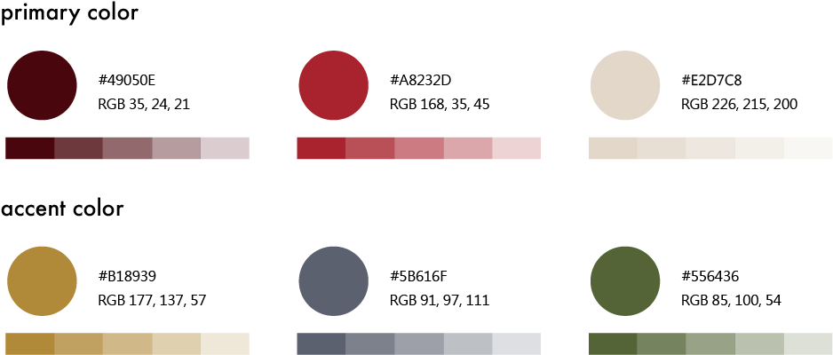
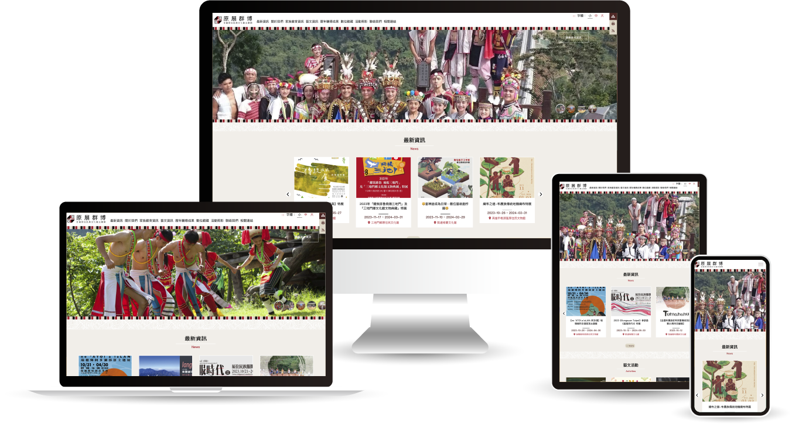
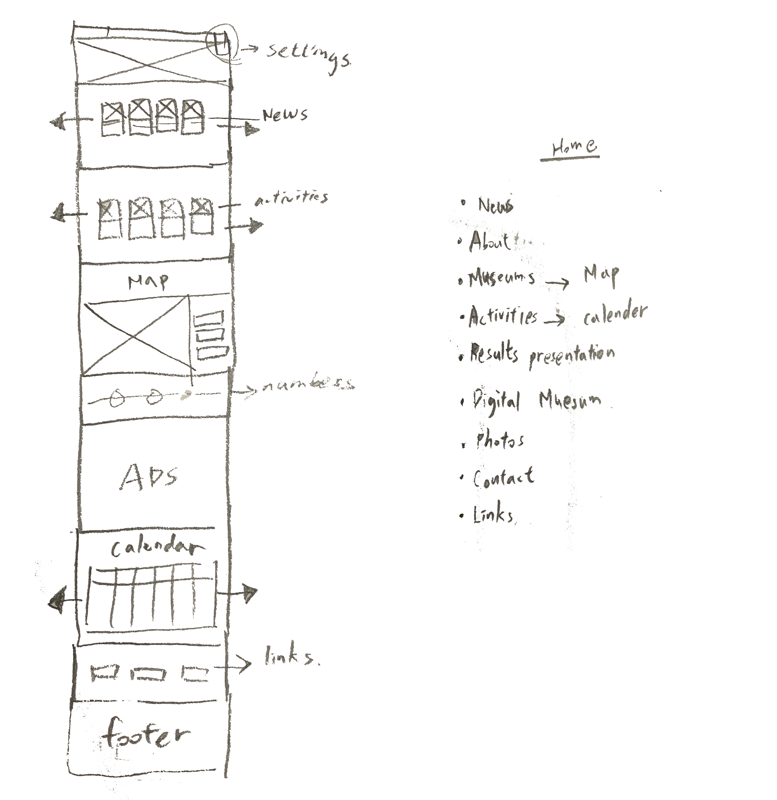
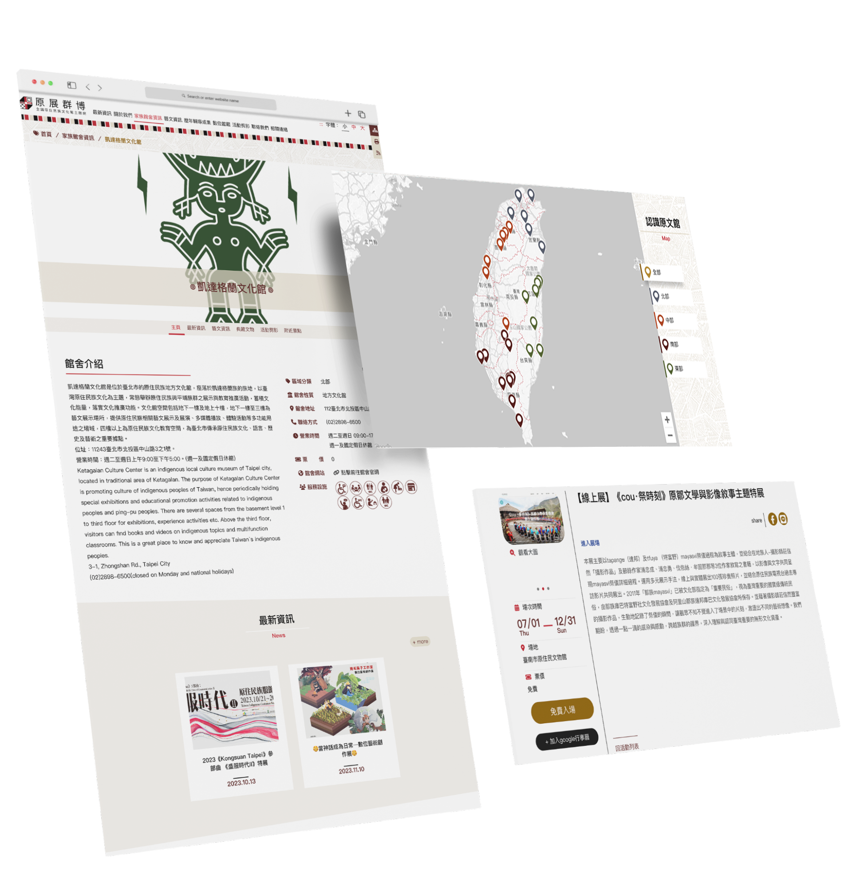

A culturally responsive, fully accessible platform for 30 indigenous museums across Taiwan
Commissioned by the Indigenous Peoples Cultural Development Center, our team rebuilt the unified web platform from the ground up — balancing strict WCAG 2.1 AA legal requirements with a design ecosystem that feels authentic to the communities it represents.
As a designer with a background in cultural heritage management, I led UX research, information architecture, front-end implementation, and accessibility compliance across the full project lifecycle.
Two critical failures were actively excluding entire user groups
Indigenous cultural heritage is frequently misrepresented, over-commercialized, or digitally inaccessible within standard web ecosystems. The legacy platform had two structural failures that had to be addressed before any design work could begin.

The platform did not comply with basic web accessibility requirements, effectively locking out low-vision users, elderly community elders, and anyone relying on assistive technology such as screen readers. Government legal mandates required full WCAG 2.1 AA compliance.
Navigation relied on rigid, linear administrative categories that failed to capture the organic, narrative-driven relationships linking the collections and histories of 30 distinct museums. Users could not discover meaningful connections between tribal regions, seasonal festivals, or shared cultural lineages.
Three core objectives guided every design decision
Our mission was to design a unified digital environment that respects cultural protocols while making ancestral archives seamlessly accessible to a global audience.
Full Accessibility Compliance
Elevate the entire platform to fully meet WCAG 2.1 Level AA — covering contrast ratios, keyboard navigation, semantic HTML, ARIA landmarks, and screen-reader compatibility.
Culturally Responsive Architecture
Implement a "slow technology" interface that trades high-intensity modern consumption for thoughtful cultural contemplation — organising content through storytelling paths rather than bureaucratic hierarchies.
Universal Responsiveness
Deliver a flawless, lightweight responsive experience (RWD) optimised for mobile — the primary browsing device for many rural community members with lower network speeds.
Five intentional stages from audit to front-end delivery
The design process was guided by a deliberate five-stage loop: Investigate → Ideate → Design → Test → Implement — each stage feeding directly into the next, with every key solution traceable back to a specific design decision.

Audit & Competitive Benchmarking
We began by performing an extensive UX audit of the legacy site to isolate exact friction points.
To establish a baseline for institutional standards, I conducted a competitive analysis benchmarking two primary digital ecosystems in this space: the Council of Indigenous Peoples and the Indigenous Peoples Cultural Development Center. Analyzing these platforms helped identify existing design patterns, official administrative frameworks, and gaps in interactive accessibility.

Storytelling Information Architecture
Rather than mapping 30 museums into alphabetical lists or administrative categories, we rebuilt the IA around how indigenous communities actually narrate their own histories: through spatial relationships, seasonal cycles, and tribal lineage.
Navigation paths are derived from cultural storytelling logic — regional clusters, tribal affinities, and festival calendars — making connections between museums feel discovered rather than searched.
Wireframing, Prototyping & Visual Language
Moving from structure to form, I sketched out wireframes to test how components stacked across viewports. The visual language was centered on two guiding principles — cultural heritage and natural coexistence — expressed through a deliberately restrained palette. Fonts with a humanistic feel were chosen to reinforce the platform's tone of contemplative, community-rooted discovery.



Responsive layout — verified across devices

.png)
.png)
Accessibility & WCAG Verification
Because WCAG AA compliance was mandatory, accessibility testing was embedded in the design phase — not treated as a post-launch checklist. Every UI element was evaluated before any code was written.
A native global toolbar lets users resize typography (Small / Medium / Large) and switch to a high-contrast reading environment — no third-party plugins required, meeting WCAG AA across the full platform.


Front-End Delivery
To ensure the design translated perfectly to code without losing performance or semantic accessibility cues, I owned the front-end layout implementation (HTML/CSS). I wrote semantic HTML structures, set keyboard-navigable ARIA landmarks, and embedded responsive cultural patterns into the structural layout.
Keyboards can navigate the platform flawlessly using skip-links and strict ARIA layout regions, ensuring complete independence for assistive screen-reader users.

30 museums. One accessible gateway. Three goals met.
By treating web accessibility not as a checklist but as a core design principle, this project successfully unified 30 indigenous museums into a single accessible digital ecosystem.
Passed all mandatory government accessibility audits across every single museum profile and collection index — zero failures across the full platform.
Successfully launched a lightweight, cross-platform mobile experience that functions flawlessly even in remote regions with lower network speeds.
Created a scalable digital brand system that treats indigenous artifacts with historical dignity and accurate representation, opening ancestral archives safely to a global audience.
Good design is intrinsically inclusive
Designing for accessibility forced our team to strip away unnecessary visual noise and flashiness, leading directly to the implementation of our 'slow technology' philosophy. When you design to accommodate and respect the margins — whether those margins are users with physical challenges or underrepresented cultural communities — the final experience becomes profoundly better for everyone.